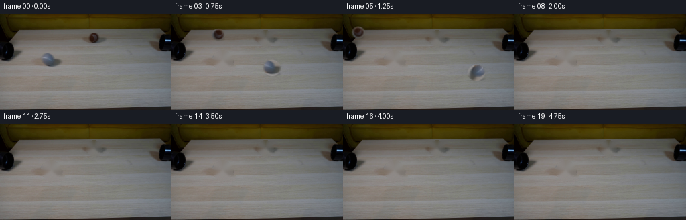
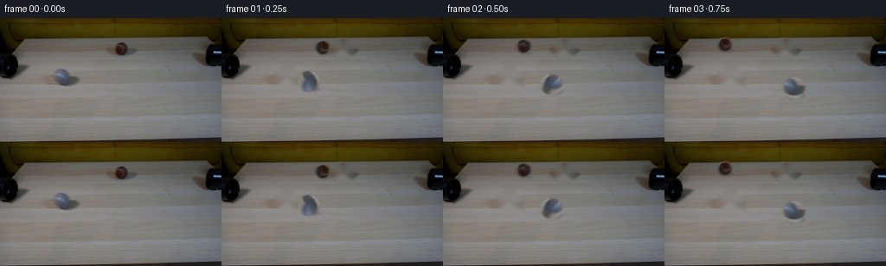
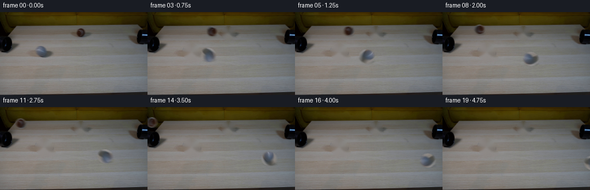
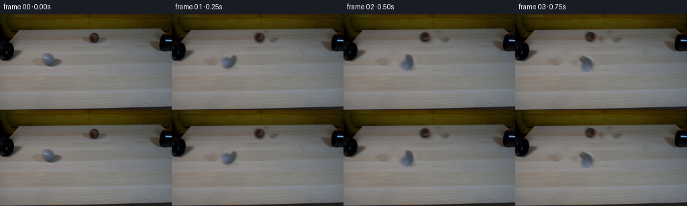

CODING AGENTS AS PIXEL WORLD MODELS
traex/GPT-5.6-Sol · 0179
点击播放 · 原生 RGB 像素
逐轮保存的候选
回放视频、检查图与代码变化。
每份候选均可单独播放。实际图片检查记录在下方工具轨迹中。
候选 01播放与检查图
点击播放 · 原生 RGB 像素


展开代码变化
--- 上一保存版本
+++ 本次保存版本
@@ -0,0 +1,137 @@
+"""Generate the requested locked-off tabletop demonstration.
+
+The supplied frame already contains both balls in flight across the table. The
+camera and all stationary apparatus are therefore retained verbatim; only the
+two small ball regions are clean-plated and translated. Texture from the
+actual balls is used instead of inventing a differently lit replacement.
+"""
+
+from pathlib import Path
+
+import cv2
+import numpy as np
+from PIL import Image
+
+import artifact_io
+
+
+HERE = Path(__file__).resolve().parent
+H, W = 144, 256
+
+
+def soft_disc(cx, cy, radius, feather=1.15):
+ yy, xx = np.mgrid[:H, :W]
+ return np.clip((radius + feather - np.hypot(xx - cx, yy - cy)) / feather,
+ 0.0, 1.0).astype(np.float32)
+
+
+def make_clean_plate(rgb):
+ """Remove the original ball silhouettes and their compact contact shadows."""
+ mask = np.zeros((H, W), np.uint8)
+ cv2.circle(mask, (140, 36), 11, 255, -1, cv2.LINE_AA)
+ cv2.ellipse(mask, (143, 43), (10, 3), 0, 0, 360, 255, -1, cv2.LINE_AA)
+ cv2.circle(mask, (76, 69), 14, 255, -1, cv2.LINE_AA)
+ cv2.ellipse(mask, (80, 78), (15, 4), 0, 0, 360, 255, -1, cv2.LINE_AA)
+
+ # Telea interpolation preserves the smoothly varying, lightly textured wood.
+ bgr = cv2.cvtColor(rgb, cv2.COLOR_RGB2BGR)
+ clean = cv2.inpaint(bgr, mask, 4.0, cv2.INPAINT_TELEA)
+ return cv2.cvtColor(clean, cv2.COLOR_BGR2RGB)
+
+
+def source_layer(rgb, center, radius):
+ """Return a premultiplied full-frame layer sampled from a supplied ball."""
+ alpha = soft_disc(center[0], center[1], radius)
+ premul = rgb.astype(np.float32) * alpha[..., None]
+ return premul, alpha
+
+
+def affine_about(center, destination, angle_degrees):
+ """OpenCV transform rotating at source center, then moving to destination."""
+ m = cv2.getRotationMatrix2D(center, angle_degrees, 1.0).astype(np.float32)
+ mapped_center = m[:, :2] @ np.asarray(center, np.float32) + m[:, 2]
+ m[:, 2] += np.asarray(destination, np.float32) - mapped_center
+ return m
+
+
+def warped_ball(layer, alpha, center, destination, angle):
+ m = affine_about(center, destination, angle)
+ p = cv2.warpAffine(layer, m, (W, H), flags=cv2.INTER_CUBIC,
+ borderMode=cv2.BORDER_CONSTANT, borderValue=0)
+ a = cv2.warpAffine(alpha, m, (W, H), flags=cv2.INTER_CUBIC,
+ borderMode=cv2.BORDER_CONSTANT, borderValue=0)
+ return p, np.clip(a, 0.0, 1.0)
+
+
+def add_contact_shadow(frame, center, radius, strength=0.20):
+ """A very small diffuse shadow keeps the rolling sphere on the tabletop."""
+ x, y = center
+ sh = np.zeros((H, W), np.float32)
+ cv2.ellipse(sh, (int(round(x + radius * .22)), int(round(y + radius * .78))),
+ (max(1, int(round(radius * .82))), max(1, int(round(radius * .20)))),
+ 0, 0, 360, 1.0, -1, cv2.LINE_AA)
+ sh = cv2.GaussianBlur(sh, (0, 0), .85)
+ return frame * (1.0 - strength * sh[..., None])
+
+
+def composite_pose(background, spec, time, exposure_offset):
+ """Render one short shutter-time sample of both constant-speed balls."""
+ out = background.astype(np.float32).copy()
+ for ball in spec:
+ t = time + exposure_offset
+ c0 = np.asarray(ball["center"], np.float32)
+ vel = np.asarray(ball["velocity"], np.float32)
+ dst = c0 + vel * t
+ r = ball["radius"]
+
+ # Skip only once the complete blurred object is beyond the image.
+ if dst[0] < -r - 3 or dst[0] > W + r + 3 or dst[1] < -r - 3 or dst[1] > H + r + 3:
+ continue
+ out = add_contact_shadow(out, dst, r, ball["shadow"])
+ distance = np.linalg.norm(vel) * t
+ # Rolling angle follows distance / radius. Opposite travel directions
+ # naturally rotate in opposite directions.
+ sign = 1.0 if vel[0] >= 0 else -1.0
+ angle = sign * np.degrees(distance / r)
+ p, a = warped_ball(ball["layer"], ball["alpha"], ball["center"], dst, angle)
+ out = p + out * (1.0 - a[..., None])
+ return np.clip(out, 0, 255)
+
+
+def generate():
+ original = np.asarray(Image.open(HERE / "first_frame.png").convert("RGB"), dtype=np.uint8)
+ assert original.shape == (H, W, 3)
+ clean = make_clean_plate(original)
+
+ # Centers/radii are measured from the supplied image. Their different
+ # lanes and apparent sizes express the perspective depth of the table.
+ brown_layer, brown_alpha = source_layer(original, (140.0, 35.5), 8.4)
+ grey_layer, grey_alpha = source_layer(original, (76.0, 69.5), 11.8)
+ balls = [
+ dict(center=(140.0, 35.5), radius=8.4, velocity=(-23.5, -1.65),
+ layer=brown_layer, alpha=brown_alpha, shadow=.16),
+ dict(center=(76.0, 69.5), radius=11.8, velocity=(24.5, 3.65),
+ layer=grey_layer, alpha=grey_alpha, shadow=.14),
+ ]
+
+ frames = [original.copy()]
+ # Five evenly weighted shutter samples give restrained real-camera motion
+ # blur (about 6 px), while centers advance at a visibly high rolling speed.
+ shutter_samples = np.linspace(-0.055, 0.055, 5, dtype=np.float32)
+ for index in range(1, 20):
+ samples = [composite_pose(clean, balls, float(index), float(dt))
+ for dt in shutter_samples]
+ frame = np.mean(samples, axis=0)
+
+ # Fine sensor grain is stationary enough not to make the locked shot
+ # shimmer; the original image already supplies nearly all texture.
+ frames.append(np.clip(np.rint(frame), 0, 255).astype(np.uint8))
+
+ result = np.stack(frames).astype(np.uint8)
+ # Contract-critical identity check for frame zero.
+ assert np.array_equal(result[0], original)
+ return result
+
+
+if __name__ == "__main__":
+ artifact_io.save(generate(), HERE)
候选 02播放与检查图
点击播放 · 原生 RGB 像素


展开代码变化
--- 上一保存版本
+++ 本次保存版本
@@ -108,9 +108,9 @@
brown_layer, brown_alpha = source_layer(original, (140.0, 35.5), 8.4)
grey_layer, grey_alpha = source_layer(original, (76.0, 69.5), 11.8)
balls = [
- dict(center=(140.0, 35.5), radius=8.4, velocity=(-23.5, -1.65),
+ dict(center=(140.0, 35.5), radius=8.4, velocity=(-38.0, -2.65),
layer=brown_layer, alpha=brown_alpha, shadow=.16),
- dict(center=(76.0, 69.5), radius=11.8, velocity=(24.5, 3.65),
+ dict(center=(76.0, 69.5), radius=11.8, velocity=(38.5, 5.70),
layer=grey_layer, alpha=grey_alpha, shadow=.14),
]
@@ -119,7 +119,8 @@
# blur (about 6 px), while centers advance at a visibly high rolling speed.
shutter_samples = np.linspace(-0.055, 0.055, 5, dtype=np.float32)
for index in range(1, 20):
- samples = [composite_pose(clean, balls, float(index), float(dt))
+ time_seconds = index / 4.0
+ samples = [composite_pose(clean, balls, time_seconds, float(dt))
for dt in shutter_samples]
frame = np.mean(samples, axis=0)
可观测工具轨迹
实际执行的命令与返回图片。
命令 1exit 0
/bin/bash -lc 'cat GENERATION_RULES.md'
命令 2exit 0
/bin/bash -lc "cat prompt.txt && printf '\\n---FILES---\\n' && find . -maxdepth 2 -type f -printf '%p\\n' | sort"
命令 3exit 0
/bin/bash -lc "python3 - <<'PY'
from PIL import Image
im=Image.open('first_frame.png')
print(im.mode, im.size)
print(im.getextrema())
PY"命令 4exit 0
/bin/bash -lc "python3 - <<'PY'
from PIL import Image
import numpy as np
im=np.array(Image.open('first_frame.png'))
h,w,_=im.shape
# kmeans concise cluster centers
from sklearn.cluster import KMeans
X=im.reshape(-1,3)
km=KMeans(n_clusters=12,random_state=0,n_init=5).fit(X[::4])
cent=km.cluster_centers_.round().astype(int)
labels=km.predict(X).reshape(h,w)
order=np.argsort([-np.sum(labels==i) for i in range(12)])
chars=' .:-=+*#%@AB'
print('clusters:')
for rank,i in enumerate(order): print(rank,i,cent[i],np.sum(labels==i))
# map rank to chars and downsample modal label blocks 4x4
rankmap={i:r for r,i in enumerate(order)}
print('\\ncluster map 4x4:')
for y in range(0,h,4):
s=''
for x in range(0,w,4):
b=labels[y:min(y+4,h),x:min(x+4,w)].ravel(); q=np.bincount(b,minlength=12).argmax(); s+=chars[rankmap[q]]
print(f'{y:03d} '+s)
PY"命令 5exit 0
/bin/bash -lc "python3 - <<'PY'
import cv2, numpy as np
from PIL import Image
im=np.array(Image.open('first_frame.png')); gray=cv2.cvtColor(im,cv2.COLOR_RGB2GRAY)
for th in [15,25,40,55,70,85,100]:
m=(gray<th).astype(np.uint8)
n,L,st,cen=cv2.connectedComponentsWithStats(m,8)
print('\\nTH',th,'coverage',m.sum())
for i in np.argsort(st[1:,4])[::-1][:20]+1:
x,y,w,h,a=st[i];
if a>=8: print((x,y,w,h,a), np.round(cen[i],1))
# color saturation components
hsv=cv2.cvtColor(im,cv2.COLOR_RGB2HSV)
for cond,name in [((hsv[:,:,1]>80)&(hsv[:,:,2]<130),'satdark'),((im[:,:,0]>im[:,:,1]*1.15)&(im[:,:,0]>im[:,:,2]*1.25),'reddish')]:
m=cond.astype(np.uint8); n,L,st,cen=cv2.connectedComponentsWithStats(m,8); print(name,m.sum())
for i in np.argsort(st[1:,4])[::-1][:15]+1:
x,y,w,h,a=st[i];
if a>10: print((x,y,w,h,a),np.round(cen[i],1), np.round(im[L==i].mean(0),1))
# coarse mean RGB each 16x16
print('\\n16 grid grayscale mean')
for y in range(0,144,8): print(y,' '.join(f'{gray[y:y+8,x:x+8].mean():3.0f}' for x in range(0,256,8)))
PY"命令 6exit 0
/bin/bash -lc "python3 - <<'PY'
from PIL import Image
import numpy as np, cv2
im=np.array(Image.open('first_frame.png'))
# patches print grayscale/color classes per pixel 2x downsample
for name,(x0,y0,x1,y1) in {'obj1':(118,22,164,50),'obj2':(55,52,100,84),'left':(0,20,40,75),'right':(215,20,256,65)}.items():
p=im[y0:y1,x0:x1]; g=cv2.cvtColor(p,cv2.COLOR_RGB2GRAY); hsv=cv2.cvtColor(p,cv2.COLOR_RGB2HSV)
print('\\n',name,'range', (x0,y0,x1,y1),'mean',p.mean((0,1)))
# each actual px but map luma bins, lowercase reddish/brown, uppercase neutral
chars='@%#*+=-:. '
for yy in range(0,len(p),1):
s=''
for xx in range(0,len(p[0]),1):
v=g[yy,xx]; idx=min(9,int(v)//16)
c=chars[idx]
if p[yy,xx,0]>p[yy,xx,2]*1.35 and p[yy,xx,0]>p[yy,xx,1]*1.08: c={'@':'a','%':'b','#':'c','*':'d','+':'e','=':'f','-':'g',':':'h','.':'i',' ':'j'}[c]
s+=c
print(s)
PY"命令 7exit 0
/bin/bash -lc "python3 - <<'PY'
import cv2, numpy as np
im=cv2.imread('first_frame.png'); g=cv2.cvtColor(im,cv2.COLOR_BGR2GRAY)
for p2 in [8,10,12,15,18]:
c=cv2.HoughCircles(g,cv2.HOUGH_GRADIENT,1,8,param1=50,param2=p2,minRadius=4,maxRadius=18)
print(p2, None if c is None else np.round(c[0]).astype(int).tolist())
PY"命令 8exit 0
/bin/bash -lc "python3 - <<'PY'
from PIL import Image
import numpy as np
im=np.array(Image.open('first_frame.png')).astype(float)
for name,c,r in [('brown',(140,35.5),9),('gray',(76,69),12)]:
yy,xx=np.mgrid[:144,:256]; d=np.hypot(xx-c[0],yy-c[1]); print(name)
for a,b in [(0,2),(2,4),(4,6),(6,8),(8,10),(10,12),(12,14)]:
z=im[(d>=a)&(d<b)]; print(a,b,np.round(z.mean(0),1),len(z))
PY"命令 9exit 0
/bin/bash -lc 'cat artifact_io.py'
命令 10exit 0
/bin/bash -lc "python3 - <<'PY'
from PIL import Image
import numpy as np, cv2
im=np.array(Image.open('first_frame.png')); g=cv2.cvtColor(im,cv2.COLOR_RGB2GRAY)
for y in range(54,83):
print(f'{y:3}', ' '.join(f'{g[y,x]:3}' for x in range(58,99)))
print('brown')
for y in range(25,47): print(f'{y:3}',' '.join(f'{g[y,x]:3}' for x in range(128,153)))
PY"命令 11exit 0
/bin/bash -lc "python3 generate.py && python3 - <<'PY'
import numpy as np
from PIL import Image
z=np.load('pixels.npz')['pixels']
print('packed',z.shape,z.dtype)
ims=np.stack([np.array(Image.open(f'frames/{i:02d}.png')) for i in range(20)])
a=np.array(Image.open('first_frame.png'))
print('frames',ims.shape,ims.dtype,'frame0 identical',np.array_equal(a,ims[0]))
print('mean abs deltas:',[round(np.abs(ims[i].astype(int)-ims[i-1]).mean(),3) for i in range(1,20)])
print('changed pixels vs base:',[(i,int(np.any(ims[i]"'!=a,2).sum())) for i in [0,1,2,3,5,8,12,16,19]])
PY'命令 12exit 0
/bin/bash -lc "python3 generate.py && python3 - <<'PY'
import numpy as np
from PIL import Image
ims=np.stack([np.array(Image.open(f'frames/{i:02d}.png')) for i in range(20)])
a=np.array(Image.open('first_frame.png'))
print('identical',np.array_equal(ims[0],a),ims.shape,ims.dtype)
print('MAD consecutive',*[f'{np.abs(ims[i].astype(int)-ims[i-1]).mean():.2f}' for i in range(1,20)])
print('static tail equality',*[np.array_equal(ims[i],ims[i-1]) for i in range(15,20)])
# estimate pixels differing from clean through edge of sequence by loading regenerate internals
import generate
o=np.array(Image.open('first_frame.png')); cl=generate.make_clean_plate(o)
print('changed from clean',*[np.any(ims[i]"'!=cl,2).sum() for i in range(1,20)])
print('"'output files')
PY
ls -lh pixels.npz index.html inspection.png transition_check.png frames/00.png frames/19.png"保存候选 2 份；完成命令 12 次；可验证图片返回 0 张。原始 API 响应与完整日志保留在本地。